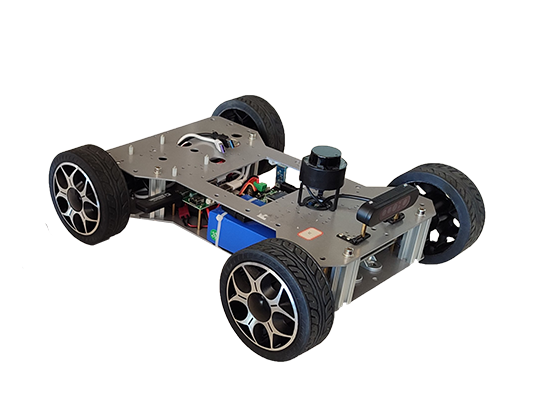
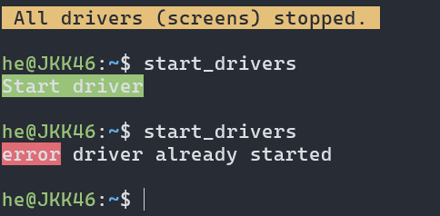
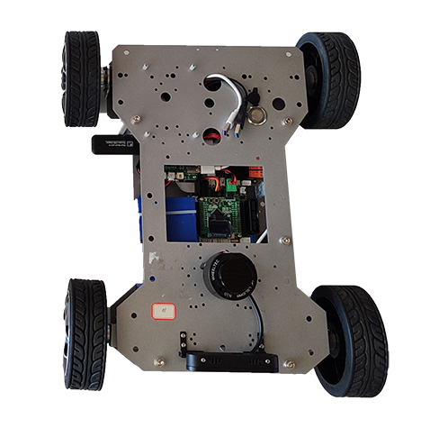

Wheeltec 101¶
- Robot: Wheeltec Roboworks Ackermann Mini
- ROS version: ROS 2 Jazzy (but also works with ROS 2 Humble)

The short link to this page: go.sze.hu/wh
1. Basic usage¶
Robot connection¶
| property | default |
|---|---|
user@hostname |
wheeltec@roboworks wheeltec@192.168.0.1## |
| SSID | wheeltec_robo_## |
| Password | dongguan |
Battery status¶
| status | volt |
|---|---|
| 🟢 | 21.0 V- 25.0V |
| 🟡 | 20.0V- 21.0V |
| 🔴 | < 20.0 V |

nmtui / WiFi hotspot¶
Network Manager Text User Interface
Profile name: hotspot1
Device: wlan0
SSID: wheeltec_robo_#
Mode: Access Point
Security: WPA & WPA2 Personal
Password: dongguan
IPv4 address: from 192.168.0.101/24 to 192.168.0.113/24
IPv4 gateway: 192.168.0.1

VS code SSH¶
If your robot IP is 192.168.0.101 then:
PS C:\Users\he> ssh wheeltec@192.168.0.100 mkdir -p .ssh
wheeltec@192.168.0.100's password:
PS C:\Users\he> cat .ssh/id_rsa.pub | ssh wheeltec@192.168.0.100 'cat >> .ssh/authorized_keys'
wheeltec@192.168.0.100's password:
PS C:\Users\he> ssh wheeltec@192.168.0.100
PS C:\Users\he\.ssh> ls
known_hosts
2. Using ROS 2 for driver and controller¶
Driver¶
The defualt command is to start the robot with the ROS 2 launch file, which blocks the terminal.
Don't forget to source before ROS commands.
source ~/ros2_ws/install/setup.bash
r2
ros2 launch turn_on_wheeltec_robot turn_on_wheeltec_robot.launch.py lidar:=true camera:=false foxglove:=true joy:=false
The preferred way is to use the provided script start_drivers, which starts the robot drivers in the background (witht the help of screen).
start_drivers
Observe similar output:

Also you can stop the drivers with the provided script stop_all.
stop_all
Controller¶
The defualt command is to start the controller with the ROS 2 launch file, which blocks the terminal.
Don't forget to source before ROS commands.
source ~/ros2_ws/install/setup.bash
r2
ros2 launch megoldas_sim24 megoldas1.launch.py # start simple_pursuit
ros2 run megoldas_sim24 simple_pursuit.py
ros2 launch megoldas_sim24 megoldas2.launch.py # start follow_the_gap
ros2 run megoldas_sim24 follow_the_gap.py
3. Data acquisition¶
Use the provided launch file to start data acquisition:
ros2 launch mcap_rec preset_wheeltec01.launch.py tag:=scenario01
In this way the data will be stored in the /home/wheeltec/bag/ folder with the in filename scenario01 is the tag you provided. This way it is easier to identify the different data acquisition sessions.
Copy the data to your local computer with rsync. On your local computer run:
rsync -avzh --progress wheeltec@192.168.0.100:/home/wheeltec/bag/scenario01 /mnt/c/bag/
Warning
You can only run the rsync command on your local computer, not on Wheeltec robot!
4. Visualization¶
Foxglove studio¶
If you have started the robot driver with the foxglove:=true argument, then you can connect to the robot with Foxglove studio.


The frame /odom_combined is practically the same as /map, there is a static 0,0,0 transform between them. The only dynamic transform is between /odom_combined and /base_link.
graph TD;
map([ map]):::light
odom_combined([ odom_combined]):::light
base_link([ base_link]):::light
chassis([ chassis]):::light
camera_link([ camera_link]):::light
imu_link([ imu_link]):::light
laser([ laser]):::light
odom_combined -.->|dynamic| base_link
base_link -->|static| chassis
base_link -->|static| camera_link
base_link -->|static| imu_link
base_link -->|static| laser
map ==>|static - same| odom_combined
classDef light fill:#34aec5,stroke:#152742,stroke-width:2px,color:#152742
classDef dark fill:#152742,stroke:#34aec5,stroke-width:2px,color:#34aec5
classDef white fill:#ffffff,stroke:#152742,stroke-width:2px,color:#152742
classDef red fill:#ef4638,stroke:#152742,stroke-width:2px,color:#fffDanger
There might be even more frames, but we are not using them.
5. Code editing in VS code¶
The recommended way to edit code on the robot is to use VS code with the Remote - SSH extension.


6. Commands¶
| Command | Description |
|---|---|
start_drivers |
Start the robot drivers in the background |
stop_all |
Stop all background processes started with screen |
r2 |
Source the ROS 2 workspace (same as source ~/ros2_ws/install/setup.bash) |
ros2 topic list |
List all active topics |
ros2 topic echo /topic_name |
Echo the messages of a topic |
ros2 topic hz /topic_name |
Show the publishing rate of a topic |
ros2 topic info /topic_name -v |
Show information about a topic |
ros2 node list |
List all active nodes |
Useful links¶
- go.sze.hu/wh
- foxglove.dev
- github.com/lichtblick-suite/lichtblick
- github.com/robotverseny/fyi
- github.com/szenergy/szenergy-public-resources/wiki/H-SSH-no-password
- github.com/robotverseny/jkk_utils/tree/mcap_rec/mcap_rec
- github.com/robotverseny/megoldas_sim24
- jkk-research.github.io/latest/workshops/f1tenth_sim_a
- code.visualstudio.com/docs/remote/ssh
